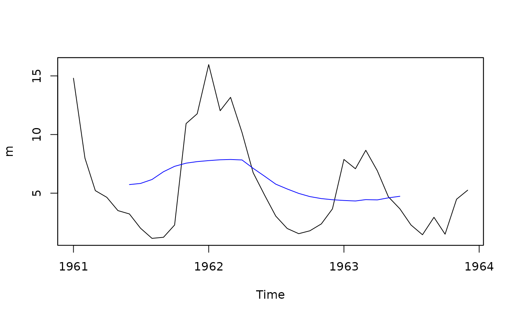

Moving Average
ma.RdGeneric function for computing a moving (sliding) average of ts.
Usage
ma(x, ...)
# Default S3 method
ma(x, win.len, FUN = mean, ...)
# S3 method for class 'zoo'
ma(x, win.len, FUN = mean, ...)Value
a vector with the moving average termns. The length of the resulting vector is the same of x, but the first and last (win.len-1)/2 elements will be NA.
Author
Mauricio Zambrano-Bigiarini, mzb.devel@gmail
Examples
## Loading daily streamflows at the station Oca en Ona (Ebro River basin, Spain) ##
data(OcaEnOnaQts)
x <- OcaEnOnaQts
## Daily to Monthly ts
m <- daily2monthly(x, FUN=mean, na.rm=FALSE)
# Plotting the monthly values
plot(m, xlab="Time")
## Plotting the annual moving average in station 'x'
lines(ma(m, win.len=12), col="blue")
